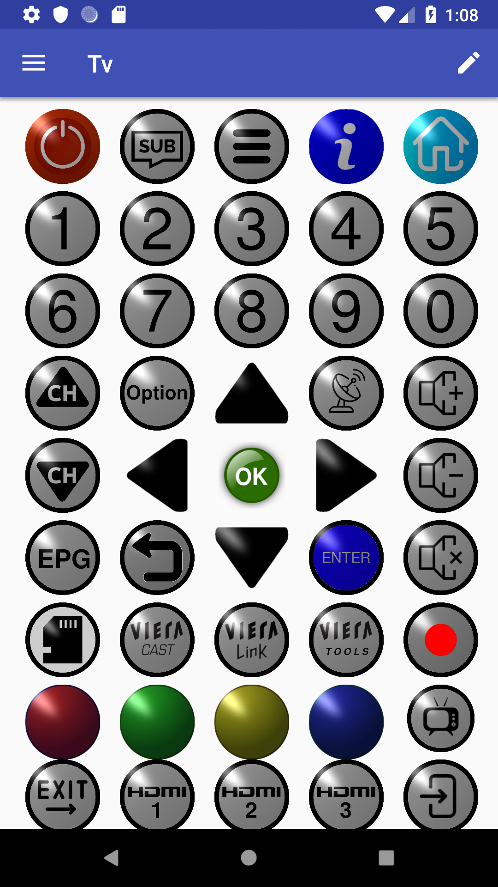

Device Remote
The Device Remote screen opens when you click on an Device Item in the Navigation Menu
From here you can:
- Press Keys to send the appropriate Infra-Red Command(s) to Devices,
- Invoke the Navigation Menu
- Edit the remote layout* (Press
 at top right of screen)
at top right of screen)
*Edit Mode is described below.
When transmission is in progress this is indicated by a icon at the top left of the remote.

 . Select the Move option then click on the destination position you want.
. Select the Move option then click on the destination position you want.